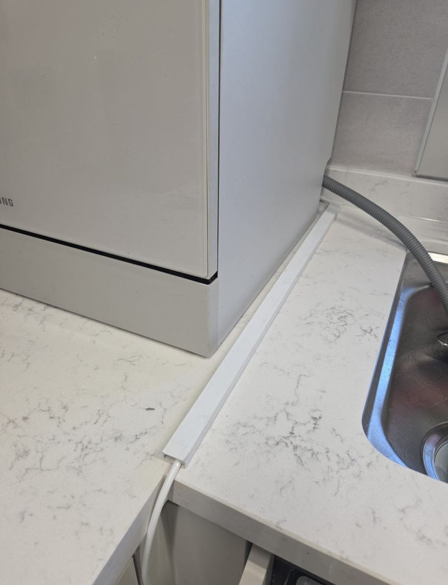
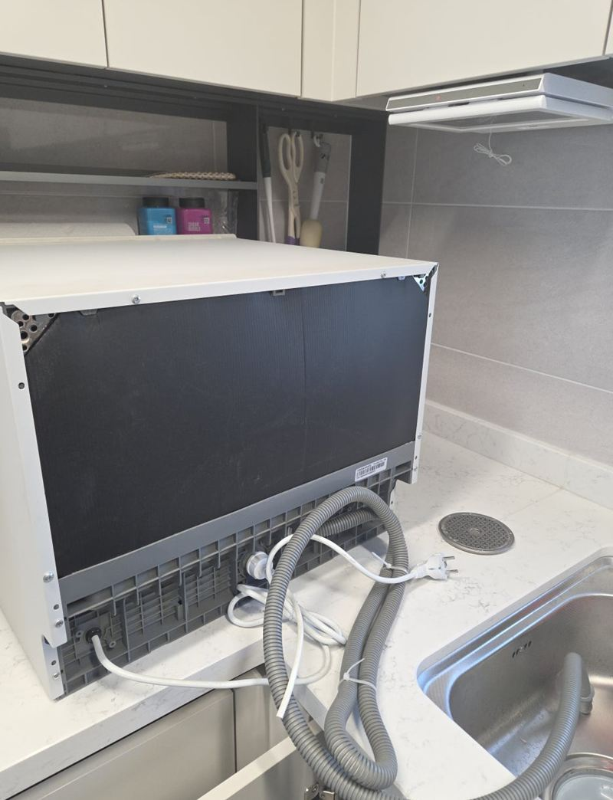
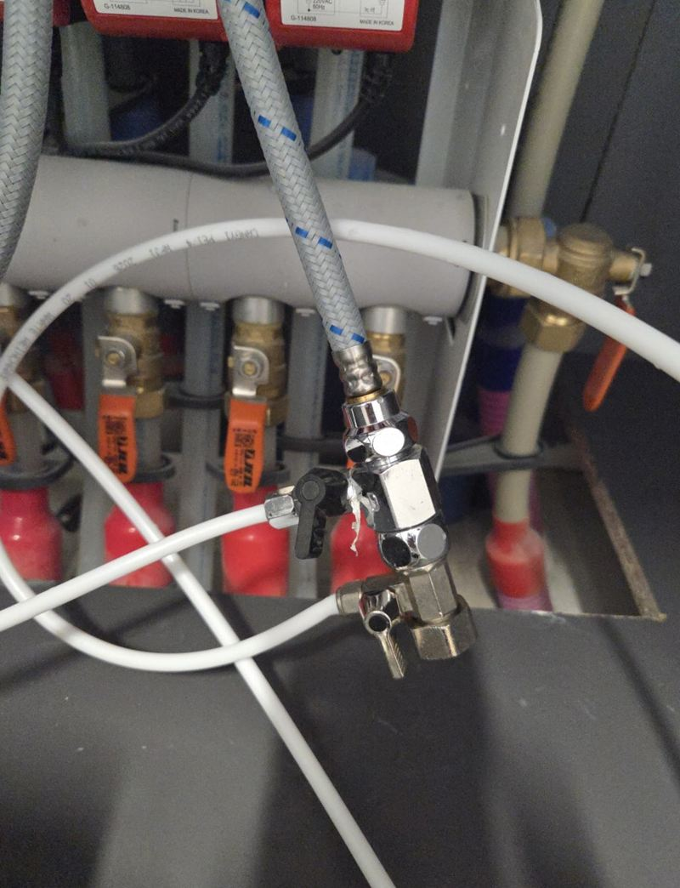
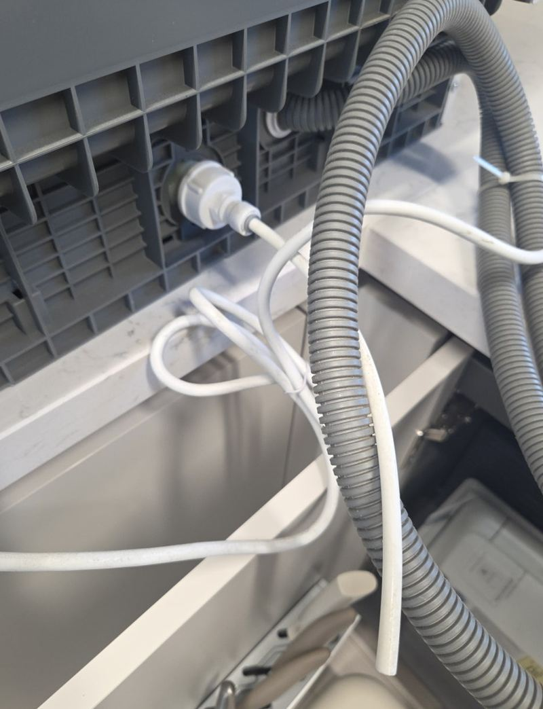
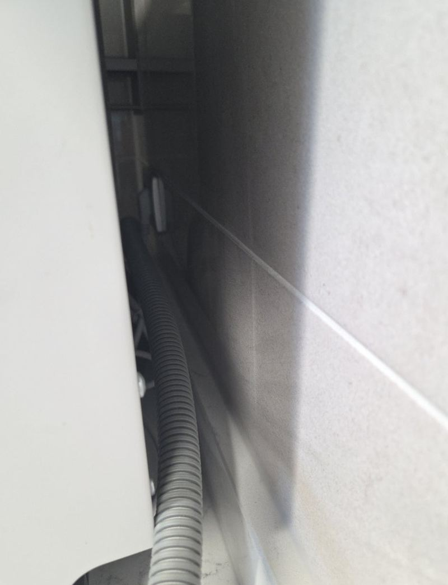
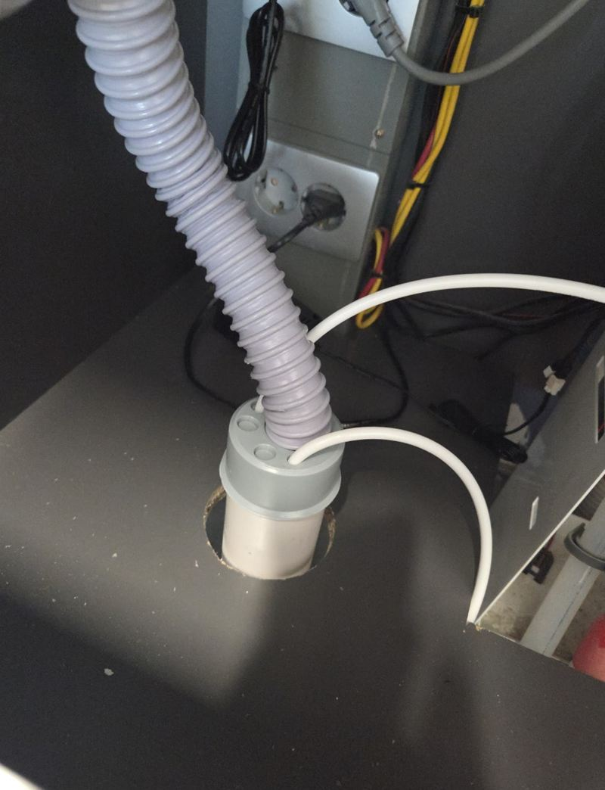

구리 독립형 식기세척기 이전 설치 방법
← 밀어서 전후 비교 →
"새집이라 상판은 건드리고 싶지 않은데, 쓰던 식기세척기를 그대로 쓸 수 있을까요?" 구리 인창동 새 아파트로 이사한 고객분이었어요. 쓰던 독립형 식세기를 가져오셨는데, 이사하면서 급수 라인이 잘려 그대로는 연결할 수 없었어요. 세입자라 나중에 원래대로 돌릴 수 있는 방식이길 원하셨어요. 부족한 연결 자재를 새로 준비해 급수 라인을 다시 잇고, 상판을 뚫지 않는 무타공 방식으로 급수·배수를 연결한 뒤 시험 운전으로 누수를 확인했어요.
| 현장 | 구리 인창동 새 아파트 주방, 세입자 입주 |
|---|---|
| 문제 | 이사 중 급수 라인 절단, 연결 부품 부족 |
| 한 일 | 설치 위치·급배수 동선 확인 → 연결 자재 준비 → 급수 밸브 확인·무타공 급수 연결 → 싱크대 안 배관 정리·고정 → 배수 연결 → 시험 운전·누수 확인 |
| 조건 | 상판 무타공, 원상복구 가능 |
쓰던 식세기, 이사 가서도 쓸 수 있어요
독립형 식기세척기는 빌트인처럼 장에 맞춰 짜 넣은 게 아니라서 다른 집으로 옮겨 쓰기 좋아요. 다만 옮길 때 급수 호스와 연결 부품을 잘 챙겨야 해요. 이 집처럼 이사 중 호스가 잘리거나 부품이 없어지면, 그 부분을 새로 맞춰야 해요.
독립형은 놓을 자리보다 물이 들어오고 나가는 길이 더 중요해요. 싱크대 수전과 배수구가 가까운지, 호스가 어디로 지나갈 수 있는지를 먼저 봤어요.


상판을 뚫지 않는 무타공 연결
무타공은 상판에 구멍을 내지 않고, 걸레받이 공간이나 이미 있는 틈으로 호스를 지나가게 하는 방법이에요. 새집에 들어가거나 전세·월세로 사는 분들이 많이 골라요. 나중에 떠날 때 호스만 빼면 원래 상태로 돌아가요.
급수 연결
싱크대 아래 급수 밸브를 확인하고 전용 부속으로 라인을 나눠 연결했어요. 사용 중 누수와 바로 이어지는 부분이라 연결부를 하나씩 조였어요.


배관 정리
싱크대 안에서 호스가 엉키거나 흔들리면 마찰로 상해요. 움직이지 않게 정리해 고정하고, 겉으로 보이는 호스는 최대한 줄였어요.

배수 연결과 시험 운전
배수가 잘못 이어지면 역류나 누수가 생겨요. 배수 라인을 연결한 뒤 실제로 돌려 보며 물이 들어오고 빠지는지, 새는 곳이 없는지 확인했어요.

이전 설치 전에 확인할 것
- 호스와 부품 챙기기이삿짐 쌀 때 호스, 분기 부속, 고정 부품을 따로 봉투에 담아 주세요.
- 급수 밸브 위치새집 싱크대 아래에 분기할 밸브가 있는지 봐요.
- 배수 동선배수 호스가 싱크대 배수구까지 닿는지 확인해요.
- 무타공 가능 여부걸레받이나 틈으로 호스를 지나가게 할 수 있는 구조인지 봐요.
고객분은 "급수 라인이 잘려 있어 다시 쓸 수 있을까 걱정했는데 깔끔하게 해결됐고, 상판을 안 뚫어서 좋았다, 새는 곳까지 끝까지 확인해 줘서 안심된다"고 하셨어요.
세입자라면 이 점이 좋아요
전세나 월세로 사는 집은 상판이나 벽에 구멍을 내면 나갈 때 원상복구 문제가 생겨요. 무타공 연결은 상판을 건드리지 않아 그런 걱정이 줄어요. 나갈 때는 호스를 빼고 밸브에 단 분기 부속만 정리하면 돼요.
쓰던 식세기를 계속 쓰면 새 제품을 사는 비용도 아낄 수 있어요. 이사할 때 호스와 부속만 잘 챙겨 오시면 연결은 훨씬 간단해져요.
식기세척기 이전 질문
빌트인 식세기도 옮길 수 있나요?
새집에 넣을 장 크기가 맞는지 먼저 봐야 해요. 장을 손봐야 할 수도 있어요.
무타공은 물이 잘 빠지나요?
배수 호스 높이와 경사를 맞추면 잘 빠져요. 시험 운전으로 확인해요.
이사 업체가 떼어 준 그대로 가져왔어요.
호스가 남아 있으면 상태를 보고 다시 쓰고, 상했으면 새로 바꿔요.
정수기와 같은 밸브를 써도 되나요?
분기 부속으로 나누면 함께 쓸 수 있어요.
나갈 때 원상복구는 어떻게 해요?
호스를 빼고 분기 부속만 정리하면 원래 상태가 돼요.
콘센트가 멀어요.
전원 위치에 따라 놓을 자리를 조정하거나 전기 작업을 따로 상의해요.
다른 식기세척기 현장
제품 사진과 놓을 자리, 싱크대 아래 사진을 보내 주세요.
전화 상담 010-4517-9872